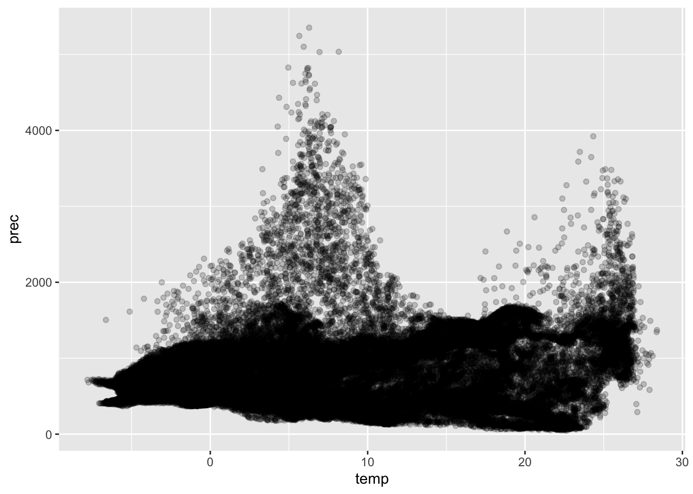

{kind=link}
{kind=link}
install.packages('raster')Intro to raster spatial data in R
Learning Objectives
- Load and plot raster spatial data into R
- Changing the extent and resolutionof a raster object
- Extracting values from raster objects
- Plotting raster objects with the
ggplotpackageFunctions taught in this tutorial:
raster(),stack(),crop(),aggregate(),ncell()rasterToPoints(),mask(),geom_rasterPackages used in this tutorial:
raster,sf,ggplot,dplyr,viridis
This tutorial will go over how to import and manipulate raster spatial data in the R environment. A good introduction to the concepts of raster data can be found in this ArcGis Webpage. Basically, raster files consist of a rectangle-shaped image file used to store spatial data about a specific section of the surface of the earth. Similar to any image file, raster files are composed of several little squares of equal cizes, called cells. Each raster file store values from one specific continuous or categorical variable (e.g., temperature, precipitation, altitude, population density, disease prevalence, annual income, presence/absence of a park). Since a raster file represents an area space, each cell is also associated with a specific area within that space, and represents the value for that variable in that space.
Raster files are then useful to store larges amount of that varying over the same area surface. The limits of the geographic space covered by a raster is called its extent. The size of the cell determines how much information is stored in that raster: larger cells mean less data is stored for that geographic area, so it means less information, or, in technical terms, a less resolution.
More info and some of the R commanda covered here can be found in this blog post.
1. Loading and visualizing raster objects
In R, raster files are treated as raster objects, from the raster package. We will start by loading one raster file into R.
First, we install and load the raster package. Remember: if you already have the raster package installed, you do not need to run the install.packages() function.
Don’t know if you have
rasterpackage installed? Just runlibrary(raster)and see what shows up. If you get an error sayingThere is no package called 'raster', that means you don’t have it installed.
library(raster)In this tutorial, we will use two raster files form the WorldClim database. This database provides raster files for global temperature and precipitation per month, as well as one file for each of the 19 so-called Bioclimatic Variables. These variables are derived from the monthly temperature and precipitation values, and represent annual trends, seasonality and extremes of those variables. Biologists use these variables a lot to try and understand what make species able to live in certain places and not others. Here we will use two bioclimatic variables: bio01 (mean annual temperature) and bio12 (mean annual precipitation).
Let’s first load the temperature data. The raster file we will use is in the .tif format, a common format for image files (you can find raster files in other formats such as .grd). It is located in our data folder, so we will proceed as follows:
mean_temp <- raster('data/wc2.1_5m_bio_1.tif')Let’s take a look at the object we just created by calling it:
mean_tempclass : RasterLayer
dimensions : 2160, 4320, 9331200 (nrow, ncol, ncell)
resolution : 0.08333333, 0.08333333 (x, y)
extent : -180, 180, -90, 90 (xmin, xmax, ymin, ymax)
crs : +proj=longlat +datum=WGS84 +no_defs
source : wc2.1_5m_bio_1.tif
names : wc2.1_5m_bio_1
values : -54.73946, 31.05112 (min, max)From the console output, we can see some information:
- this is an object of class
RasterLayer; - The object is composed by 2160 rows and 4320 columns, resulting in over 9 million cells. Think of this as a matrix, which several cells: that is how R stores the object.
- The resolution of the raster object is given in decimal degrees. The resolution here represents the length in space of the sides of a cell (refer to the links above for more info on resolution). The output here shows that the side of a cell is 0.08 (or 8%) of one arc-degree. Degree is a unit of measurement for spherical surfaces, and it is one way of measuring distances on the surface of the earth. The length represented by one arc-degree changes depending on what latitude of the planet you are: on the equator, one arc-degree equals approximately 111 km. 8% of 111km = 8.88 km. This would be the approximate length at the equator of the sides of each cell in this raster file.
- The extent is given as a vector of four values:
xmin (lower longitude, limit to the west) = -180
xmax (highest longitude, limit to the east) = 180
ymin (lower latitude, limit to the south) = -90
ymax (higher latitude, limit to the north) = 90
The output also showd additional info such as the source (name of the file), the name of the layer inside the object, and the values (minimum and maximum value found in the matrix).
Based on the extent, we can tell that this raster object covers the entire worlds (it goes from longitude -180 to longitude 180, as well as latitude -90 to 90). Let’s plot it so we can see the data on space:
plot(mean_temp)
We can see that R created a bounding box and show us the longitudes and latitudes. Additionally, it has a standard color palette for the values (green for highest values and pinkish to white for lower values), and it shows us a legend for those values.
This is a good first interaction with our object. But we still have another file to load, showing us the mean annual precipitation. We could load this second file as a separate raster object, and have two objects in our environment… Or we could create a stack of raster layers.
stack is a specific raster object in the raster package that allows us to, literally, stack several raster files with the same extent and resolution into one object. This keeps our environment less messy (avoid having several objects) and allows to further manipulate different raster layers files all together, as well as better integrate them in further analyses.
We can make a stack using the function stack. We provide to the function a vector with the location of the files in our folders:
climate <- stack(c('data/wc2.1_5m_bio_1.tif','data/wc2.1_5m_bio_12.tif'))Now let’s call this object to see what is in it:
climateclass : RasterStack
dimensions : 2160, 4320, 9331200, 2 (nrow, ncol, ncell, nlayers)
resolution : 0.08333333, 0.08333333 (x, y)
extent : -180, 180, -90, 90 (xmin, xmax, ymin, ymax)
crs : +proj=longlat +datum=WGS84 +no_defs
names : wc2.1_5m_bio_1, wc2.1_5m_bio_12
min values : -54.73946, 0.00000
max values : 31.05112, 11191.00000 We can see the output is very similar, with a few differences:
- The class of our object is now
RasterStack. - Dimensions are the same, but we have an extra info there:
nlayers(which is 2, denoting that we have to raster files in this stack). - Resolution and extent are the same.
Also notice that we have two values now in names, which are the names of the two variables we loading into this stack.
We can plot this object…
plot(climate)
…which shows both variables with their respective titles and legends.
Or we can plot one layer at a time:
plot(climate[[1]])
plot(climate[[2]])
Before we move on to manipulating our object, let’s change the names of the layers inside this stack, to make our coding easier down the road. For that, we use the function names() and we assign to it a vector of new names in the chatacter format (i.e., within quotes).
names(climate) <- c('temp','prec')
climateclass : RasterStack
dimensions : 2160, 4320, 9331200, 2 (nrow, ncol, ncell, nlayers)
resolution : 0.08333333, 0.08333333 (x, y)
extent : -180, 180, -90, 90 (xmin, xmax, ymin, ymax)
crs : +proj=longlat +datum=WGS84 +no_defs
names : temp, prec
min values : -54.73946, 0.00000
max values : 31.05112, 11191.00000 2. Changing extent and resolution
Now that we have our files loaded up, let’s go over some functions to modify what we have.
Let’s say we want to focus on the the temperature and precipitation values for North America. We can modify the extent of our stack object to a smaller coverage. If you have gone over the Intro to Vector Data tutorial, then you will remember that we can define the extent by supplying a vector with the values xmin, xmax, ymin and ymax, in that exact order. We can do use that defined extent in the crop function from the raster package to reduce the extent of all layers in our stack.
climate_namer <- crop(climate,c(-141,-51,17,59))Reminder:
xminandxmaxare the westernmost and easternmost longitude values, respectively.yminandymaxare the southernmost and northernmost latitude values, respectively. Negativexis the west of the prime meridian; positivexis the east of the prime meridian; negativeyis everything below the equator (southern hemisphere); positiveyis everything above the equator (northern hemisphere).
Now we can plot this new stack to see what it looks like. Let’s just plot the first layer:
plot(climate_namer[[1]])
We can also call the object and confirm that our extent has changed:
climate_namerclass : RasterBrick
dimensions : 504, 1080, 544320, 2 (nrow, ncol, ncell, nlayers)
resolution : 0.08333333, 0.08333333 (x, y)
extent : -141, -51, 17, 59 (xmin, xmax, ymin, ymax)
crs : +proj=longlat +datum=WGS84 +no_defs
source : memory
names : temp, prec
min values : -8.905084, 46.000000
max values : 28.56683, 5353.00000 This file we are working with is a pretty manageable size. Even the raster containing all the globe information did not take that long to load. This will not always be the case tho: the nature of raster files means that they can scale to very large files if you are dealing with larger extents of the planet and high resolutions. For instance, this digital elevation model of NYC is a raster file containing the elevation above sea level across the entire city in a resolution of 1 foot, meaning each cell covers an area of 1 ft2. That is a pretty small area, which explains why this file is 3.3 GB in size (many many tiny cells to cover the entire city). In such cases, especially when such a high resolution is not important for your question, it might be worth it to decrease the resolution by merging cells together, effectively decreasing the number of cells and the amount of space you will be occupying in your computer’s memory.
Decreasing the resolution of a raster in R means merging adjacent cells together into one single cell. This is done in R by the function aggregate in the raster package. Two important parameters are needed to use this function: the factor by which we want to aggregate, and the function we will use to calculate the resulting value of the new cell.
The factor dictates how many cells we are merging together. If 2, it means cells will be merged in pair, both in the horizontal and vertical direction. This effectively means we are merging four cells into one bigger cell. If 3, it means cells will be merged in groups of three (horizontally and vertically). This effectively means we are merging 9 cells. And so on. Check this link with a visual example of what an aggregation where factor = 5.
The function dictates what will be the value of the new cell that is formed from the merge of existing cells. Usually, a good approach is to calculate the average value. So if four cells are merged into one, the value of the new cell will be the mean of the values that existed in the four cells. Naturally, this means we are losing some information, which is unavoidable when are decreasing the resolution of a raster.
Let’s try decreasing the resolution of our cropped raster by a factor of 2:
climate_namer_lowres <- aggregate(climate_namer, fact = 2, fun = mean)Let’s plot the new stack (just the first variable):
plot(climate_namer_lowres[[1]])
And now let’s plot the one with higher resolution:
plot(climate_namer[[1]])
We cannot see much different with this extent, which maybe good. Feels like we did not lose a lot of information in here. Additionally, if you look at your environment, you will see the new object with lower resolution is around a quarter of the size (2.2 MB) of the old object (8.7 MB).
We can use function ncell() to retrieve the number of cells for each stack and confirm that the lower resolution stack has fewer cells.
ncell(climate_namer)[1] 544320ncell(climate_namer_lowres)[1] 1360803. Extracting values based on a shapefile
Now that we have two raster layers with a focused extent and a manageable resolution, we might want to extract extracting values to perform data visualization and statistical analyses. For instance, let’s say we want to see if temperature is correlated to precipitation in any way in North America. One useful function to extract the values present in this rasterstack is rasterToPoints(). This function will return a matrix where rows correspond to cells. Columns will have the longitude and latitude values of each cell (usually the centroid of the cell), plus the values for each cell from any number of variables in the stack.
climate_values <- rasterToPoints(climate_namer_lowres)We can see in our environment that this matrix has 67106 rows and 4 columns. Notice that the number of rows is not exactly the number of cells in the raster because many of them consist of regions in the ocean with are assigned an NA value (meaning no temperature or precipitation value is assigned to them), and the function then ignores those cells. If we use the head() function, we can see what are those 4 columns.
head(climate_values) x y temp prec
[1,] -138.0833 58.91667 4.3284125 2406.00
[2,] -137.9167 58.91667 3.7039621 2325.50
[3,] -137.7500 58.91667 0.4837188 2003.50
[4,] -137.5833 58.91667 -5.1237397 1613.50
[5,] -137.4167 58.91667 -6.6319271 1504.25
[6,] -137.2500 58.91667 -2.7652188 1603.50x and y represent the longitude and latitude, respectively. The other columns follow the names of the variables as stored in the stack object.
A simple and straightforward way to visualize your data and look for relationships is to create a scatterplot. We can do that using ggplot and the geometry geom_point().
Quick
ggplotrecap: we provide to theggplot()the data, and then we useaes()inside ofggplot()to say which columns need to be plotted and where (i.e., what is x axis? what is the y axis?). Then we add+and define our geometry (i.e., how will the data be plotted? Points? Lines? Barplot? Boxplot?). Our geometry in this case isgeom_point().
Remember the table we have is a matrix object (that’s what rasterToPoints() returns) but ggplot needs a data.frame. So we need to convert using the function data.frame(). We also give the alpha argument to geom_point() to make our points have low opacity so we can see better where they are clustering.
library(ggplot2)
climate_values <- data.frame(climate_values)
ggplot(data = climate_values,aes(x = temp, y = prec))+geom_point(alpha = 0.2)
There doesn’t seem to be much of a relationship, or maybe there are too many outliers. We can see that the range of precipitation is mostly the same no matter what temperature, except for two peaks: one around 8 degres Celsius an danother above 25 degrees. These are the temperatures where we see the highest levels of precipitation.
Well, let’s say we want to focus on just one of the US states now. What if we want use this raster to extract the temperature and precipitation across the state of New York only? First, we will need a polygon delimiting the boundaries of the state of New York (i.e., a vector data in a shapefile format). We will use the sf package we learned in the previous tutorial to read the shapefile.
library(sf)Linking to GEOS 3.10.2, GDAL 3.4.2, PROJ 8.2.1; sf_use_s2() is TRUEWe will read the same shapefile of US states from the previous tutorial:
states <- read_sf('data/us_state_boundaries/ne_110m_admin_1_states_provinces.shp')Now we will use the function filter() from tidyverse to subset this shapefile. We want only the polygon representing New York State. So we can filter out only the row (i.e, the feature) that corresponds to New York State.
We load the dplyr package, the tidyverse package that contains the filter() function, and use %>% to feed our states shapefile into the filter() function. Everything is saved into the object named ny_state.
library(dplyr)
ny_state <- states %>% filter(name == 'New York')Let’s see if everything is working fine by plotting those objects in space. First we plot our raster stack (just the first variable), then we plot out new NY state shapefile, using the argument add=T to plot it on top of the existing raster.
plot(climate_namer_lowres[[1]])
plot(ny_state,add=T)
Okay, everything looks good. Now our next step is to create a raster object that contains only the values present within the boundaries of New York State. For that, we using the function mask. We say we are masking our raster object by the NY state polygon, effectively removing everything that does not fall within the polygon.
ny_climate <- mask(climate_namer_lowres,ny_state)Let’s plot the new object to visualize:
plot(ny_climate[[1]])It worked! Notice that the new object maintains the extent of the old object. This happens because what the function is actually doing is assigning a NA value to anything that falls outside the polygons, but it doesn’t actually remove the cells from the matrix. You can do that by using the crop function to actually reduce the extent, but we will skip that for now (it won’t affect our next steps).
Now that we have this new masked raster, we can use the function rasterToPoints() to get the values and make a scatterplot again:
ny_climate_values <- rasterToPoints(ny_climate)
ny_climate_values <- data.frame(ny_climate_values)
ggplot(data = ny_climate_values,aes(x = temp, y = prec))+geom_point(alpha = 0.5)We have fewer points here, and still not a super clear pattern, but something starts to show. It looks like under 10 degrees Celsius precipitation tends to decrease as temperature increases. Then we have somewhat higher precipitation again above 10 degrees, with a slight decrease as temperature goes up.
Bonus Challenge: Maybe we don’t have a pattern here because we are looking at the average values. Notice that the values of temperature in NY range from 3 to 12 degrees, but we do know we have way lower and way higher temperatures than that in the state. What if the average precipitation actually changes with seasonality? Maybe more seasonal areas (where the difference between winter and summer temperatures are the largest) have the highest average precipitation rate. The raster file for temperature seasonality is present in our data folder. Try using the steps covered so far to import the data and test this new hypothesis with a quick scatterplot visualization.
4. Making a map with ggplot
Let’s finalize this tutorial by plotting our raster data along with our states shapefile using the ggplot package. We saw that we can make such a plot using just the plot function and the argument add=T to add layers on top of each other, but let’s see how to make that in ggplot so we can have nicer and easily customized plots.
We already know the function geom_sf() to be used with shapefiles. For raster files, we can use the function geom_raster(). As in all ggplot functions, it requires a dataframe. In our case, we can use the dataframe climate_values that we obtained from the function rasterToPoints(). We just need to clarify the mapping of the function, i.e., where in the dataframe is the info we want to plant. We use the aes() function to tell ggplot that our x axis corresponds to the x column (longitude), y axis corresponds to the y column (latitude) and the color to fill the cells with should be based on the column named temp. Then we use geom_sf to call the states shapefile, setting the alpha parameter to 0 (full transparency) so the polygons do not block the underlying values of the raster. Finally, we also set coord_sf based on the extent of the original raster.
ggplot()+
geom_raster(climate_values, mapping=aes(x=x,y=y,fill=temp))+
geom_sf(data = states, alpha = 0)+
coord_sf(xlim = c(-141,-51), ylim = c(17,59))
The plot is following the parameters we set, but we could work a little bit with the color gradient and the color of the lines, to make them more visible. We will use the function scale_fill_viridis from package viridis to set our color palette to one of the options available in this package. You can see all options from this package can be seen here. They were develop for better representation of data and to be easier to read by those with colorblindness.
We will also set the color of geom_sf to antiquewhite, to better visualize the states boundaries.
library(viridis)Loading required package: viridisLiteggplot()+
geom_raster(climate_values, mapping=aes(x=x,y=y,fill=temp))+
geom_sf(data = states, alpha = 0, color = 'antiquewhite')+
scale_fill_viridis()+
coord_sf(xlim = c(-141,-51), ylim = c(17,59))